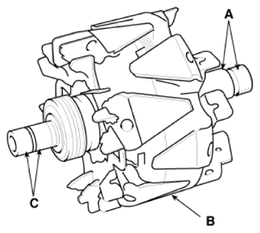

LEMON Manuals
: Even more car manuals for everyone: 1960-2025
Home
>>
Hyundai
>>
2022
>>
Elantra N Line, Standard Trans
>>
Repair and Diagnosis
>>
Electrical
>>
Charging Systems
>>
Charging System - 1.6L (Except HEV)
>>
Alternator
>>
Repair Procedures
>>
Inspection
>>
[Rotor]
Repair Procedures: Inspection: [Rotor]
Check that there is continuity between the slip rings (C).

Courtesy of HYUNDAI MOTOR AMERICA
Check that there is no continuity between the slip ring (C) and the rotor (B) or rotor shaft (A).
If the rotor fails either continuity check, replace the alternator.